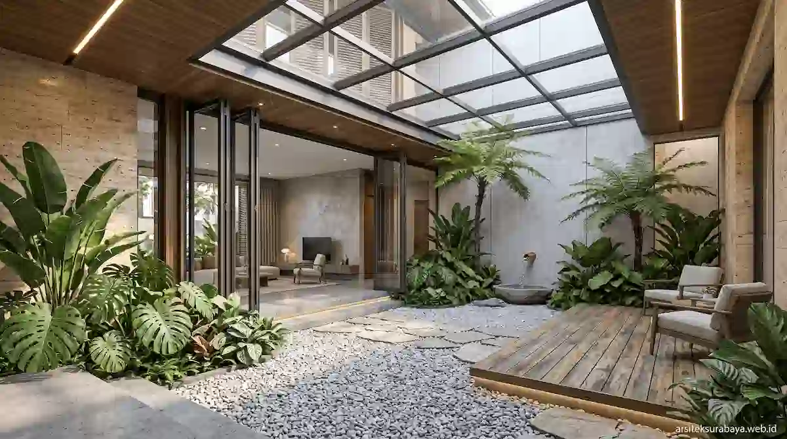

1. Tantangan Iklim & Genangan Air Hujan di Kota Surabaya
Sebagai kota metropolitan pesisir dengan topografi cenderung datar, Surabaya menghadapi tantangan ganda setiap tahunnya. Terik matahari yang sangat menyengat pada musim kemarau diimbangi dengan curah hujan berintensitas tinggi dalam durasi panjang saat musim penghujan tiba. Fenomena hujan lokal kerap memicu genangan air sementara pada kawasan permukiman yang padat maupun wilayah lintasan air limpasan.
Membangun rumah di Kota Pahlawan tidak cukup hanya berfokus pada penampilan fasad yang mewah atau tata interior yang estetik. Tanpa perencanaan teknis sipil dan arsitektur yang cermat, masalah air meluap, kelembapan dinding, serta kotoran saluran drainase dapat merusak kenyamanan tempat tinggal keluarga Anda. Oleh sebab itu, tim Arsitek Surabaya Studio menghadirkan konsep rancangan rumah tropis modern bebas banjir yang menggabungkan kekuatan struktur rekayasa fisik dengan estetika hunian mewah yang sejuk alami.
2. Wilayah Potensial & Ramai Layanan Arsitek di Surabaya
Tingginya kesadaran masyarakat akan pentingnya tempat tinggal tahan genangan air memicu lonjakan permintaan jasa arsitek profesional di berbagai sudut wilayah Kota Surabaya. Situs web arsiteksurabaya.web.id menjadi sarana konsultasi utama bagi pemilik lahan di area-area berkembang yang berpotensi tinggi berikut:
- Surabaya Timur (Dharmahusada, Kertajaya, MERR, & Sukolilo): Kawasan hunian bernilai ekonomi tinggi yang terus bertumbuh pesat. Aktivitas pembangunan rumah tinggal bertingkat, rumah kos eksklusif, hingga ruko komersial di area Dharmahusada dan sekitarnya memerlukan rekayasa elevasi lantai yang presisi agar selaras dengan peninggian jalan raya utama MERR.
- Surabaya Selatan (Ketintang, Gayungsari, Wonocolo, & Jambangan): Area permukiman padat yang berada di lintasan saluran air kota. Banyak pemilik rumah tua era 80-an di Ketintang yang menggunakan jasa arsitek untuk melakukan renovasi total, meninggikan struktur lantai dasar, serta memperbarui tata sirkulasi udara agar hunian lebih sehat.
- Surabaya Barat (Wiyung, Lakarsantri, Sambikerep, & Babatan): Wilayah pusat pengembangan properti baru dengan intensitas pembangunan yang luar biasa. Pemilik kaveling mandiri di kawasan Wiyung dan sekitarnya sangat membutuhkan perencanaan masterplan halaman dan taman bioretensi untuk menangani air hujan tanpa mengganggu keasrian lanskap.
3. Strategi Elepasi Peil Lantai & Rekayasa Drainase Terpadu
Langkah paling krusial dalam merancang hunian bebas banjir adalah menetapkan titik peil lantai utama (titik nol ruangan) secara cermat. Tim Arsitek Surabaya Studio melakukan analisis terhadap titik elevasi muka jalan utama, riwayat luapan air hujan dalam 10 tahun terakhir, serta rencana peninggian jalan oleh pemerintah kota di masa depan.
Lantai dasar rumah umumnya dinaikkan setinggi 60 hingga 100 centimeter di atas permukaan jalan raya. Agar peninggian ini tidak terkesan kaku atau memotong estetika fasad, arsitek kami mengolah selisih ketinggian tersebut dengan perancangan tangga teras bertingkat (stepped entrance), ram melandai bermaterial batu alam, serta penggunaan garasi bernuansa terbenam parsial (split-level garage).
Selain itu, sistem sirkulasi pembuangan air di dalam kaveling dipisahkan menjadi dua jalur independen:
- Jalur Saluran Air Hujan (Clean Runoff): Air hujan dari atap dialirkan secara gravitasi menuju sumur resapan dan kolam bioretensi sebelum dialirkan sisa limpasaannya ke saluran kota.
- Jalur Greywater & Sewage: Limpahan air buangan dapur dan kamar mandi dialirkan menuju tangki septik biologis kedap air (bio-septic tank) bersertifikasi agar tidak tercemar saat banjir terjadi di luar area rumah.

4. Penerapan Taman Bioretensi & Sumur Resapan Mandiri
Arsitektur tropis yang bijak tidak membuang seluruh air hujan ke luar kaveling, melainkan mengelolanya secara mandiri untuk menjaga keseimbangan ekosistem tanah setempat. Kami mengintegrasikan konsep taman bioretensi di area halaman depan maupun taman tengah (inner courtyard).
Taman bioretensi menggunakan ceruk tanah yang dilapisi oleh kombinasi batu koral, pasir halus resapan, dan vegetasi penyerap air berakar kuat seperti pohon ketapang kencana, monstera, dan rumput jepang. Ketika hujan lebat mengguyur, taman ini berfungsi sebagai wadah penampungan air sementara yang menyerap air kembali ke dalam tanah secara bertahap dalam hitungan menit, mencegah terjadinya genangan di permukaan garasi atau teras.
5. Pemilihan Material Tahan Air & Bebas Kelembapan Musiman
Kelembapan tinggi akibat cipratan air hujan atau uap air tanah sering kali menyebabkan cat dinding mengelupas, timbulnya jamur hitam, hingga kerusakan pada perabot kayu. Untuk mengatasi hal ini, kami menentukan spesifikasi material berkualitas tinggi untuk bagian luar maupun lantai bawah hunian:
- Pasangan Dinding Transram Pasir Semen Kedap Waterproofer: Pasangan bata pada area fondasi hingga ketinggian 1,5 meter dari lantai dasar diplester menggunakan campuran adukan semen kedap air khusus untuk memutus kapilaritas air tanah naik ke dinding atas.
- Lantai Granit Tile Berpori Rendah (Homogeneous Tile): Penggunaan homogenous tile berkepadatan tinggi pada lantai dasar memudahkan perawatan serta tahan terhadap genangan air tanpa risiko terkelupas.
- Kusen Aluminium Powder Coating & Kaca Tempered: Menggantikan material kayu pada area luar rumah guna menghindari risiko pelapukan, muai-susut akibat cuaca tropis, serta serangan rayap.
6. Solusi Perencanaan Profesional Bersama Arsitek Surabaya Studio
Merancang rumah di kota beriklim dinamis seperti Surabaya membutuhkan keseimbangan antara pengetahuan teknis sipil, pemahaman mikroiklim lokal, serta estetika tata ruang modern. Mempercayakan proyek rumah Anda kepada konsultan berpengalaman adalah investasi terbaik untuk memastikan hunian yang aman, nyaman, dan bernilai jual tinggi hingga puluhan tahun mendatang.
Tim Arsitek Surabaya Studio siap membantu Anda mewujudkan hunian tropis modern bebas banjir dengan paket perancangan komprehensif: mulai dari studi tapak tanah, perhitungan titik peil, visualisasi 3D interior-eksterior, gambar teknis DED, perhitungan RAB konstruksi transparan, hingga pendampingan dokumen legalitas PBG Kota Surabaya.
Kesimpulan
Mewujudkan rumah tropis modern yang tahan terhadap genangan banjir di Surabaya tidak berarti harus mengorbankan keindahan fasad atau kenyamanan ruang dalam. Melalui perhitungan peninggian peil lantai dasar yang presisi, pengolahan taman bioretensi yang asri, serta penerapan material berdaya tahan air tinggi, rumah tinggal Anda tidak hanya menjadi benteng yang aman dari cuaca ekstrem, tetapi juga menjadi tempat beralih yang sejuk, sehat, dan bernilai estetika tinggi bagi seluruh anggota keluarga.